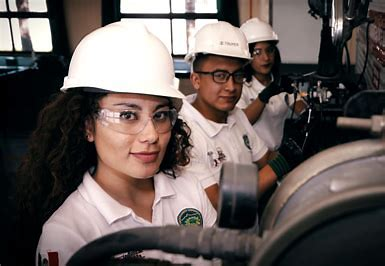
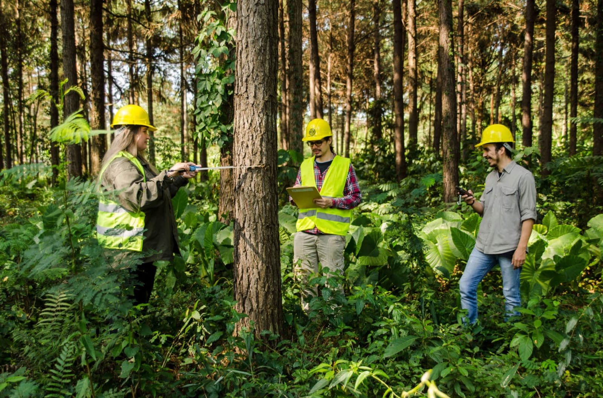
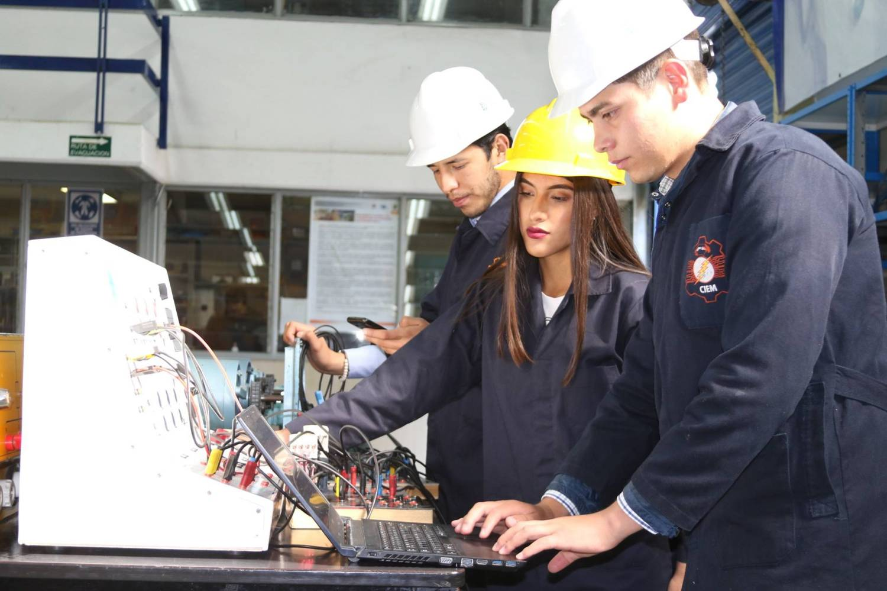
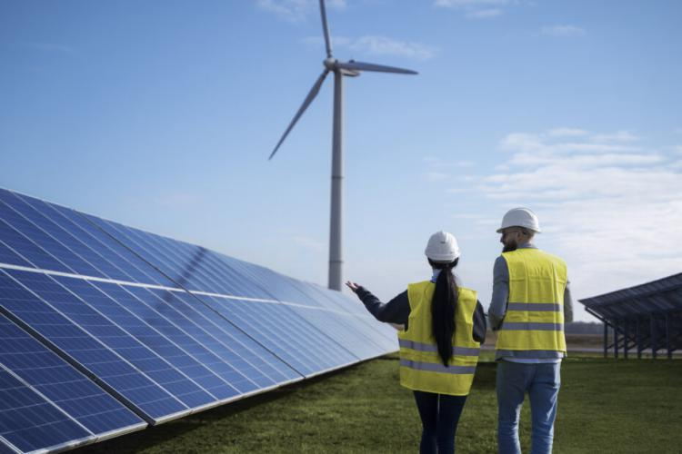

-
Ingeniería Industrial
Se enfoca en optimizar procesos, mejorar la productividad y eficiencia en empresas mediante el
diseño y gestión de sistemas integrados.

-
Ingeniería Forestal
Estudia el manejo sustentable de los bosques, conservación de recursos naturales y aprovechamiento
de productos forestales.

-
Electromecánica
Combina electricidad y mecánica para diseñar, mantener y operar sistemas electromecánicos como
motores, maquinaria o automatización.

-
Informática
Trata sobre desarrollo de software, redes, bases de datos y sistemas computacionales.
-
Gestión Empresarial
Forma profesionales capaces de dirigir organizaciones, planificar estrategias y administrar recursos
de forma eficiente.
-
Energías Renovables
Enfocada en el desarrollo y uso de tecnologías limpias como solar, eólica, hidráulica y biomasa.

-
Administración de Alimentos
Se orienta al manejo y control de procesos de producción, conservación y distribución de alimentos.